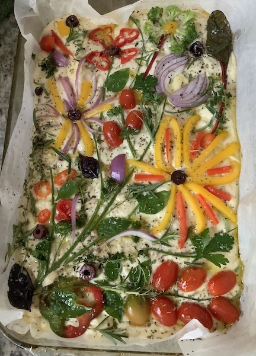

My Artsy Focaccia

Description
This is my spin off on traditional focaccia! It's still the same tasty dough but I wanted to be artistic and decorated it as best as I could.
It's pretty easy to make but the decoration takes time so it depends on your creative vision!
I am sure it will be as delicious as mine with our without decoration. Good luck!
Ingredients
Starter dough
- 1 package (7g) of dry yeast
- 2 tablespoons of all-purpose flour
- 7 tablespoons of lukewarm water
- 1 teaspoon of sugar
Focaccia dough
- starter dough
- 1 and 1/2 cups of all-purpose flour
- 2 teaspoons of salt
- 1 tablespoon of olive oil
- 1/2 cup of lukewarm water
Additional ingredients
- 4 tablespoons of olive oil
- 2 tablespoons of water
- herbs and vegetables (cherry tomatoes, red onion, bell pepper etc.)
Directions
- All ingredients for starter dough combine in a bowl and put aside for 20 min in a warm spot.
- Combine all ingredients for the focaccia dough with starter dough in a larger bowl using spatula.
- Mix until the liquid is absorbed and the ingredients form a sticky dough ball.
- Rub the surface of the dough lightly with some olive oil.
- Cover the bowl with a damp cotton towel or foil and put it aside in a warm spot for a minimum 1 hour.
- Line 9×13-inch pan with parchment paper or grease with olive oil.
- Transfer focaccia dough into the pan and spread it evenly.
- Put the pan with focaccia aside for another 30 min.
- Pour the mixture of olive oil with water on focaccia and spread evenly making small holes in dough with your fingers
- Let your imagination loose and have fun decorating it!
- Transfer the pan to the preheated oven (425 degrees F) and bake for 25 to 30 minutes until the underside is golden and crisp.
- Remove the pan and transfer the focaccia to a cooling rack.
Freshly baked focaccia is crispy and it easily separates from the pan. Enjoy!